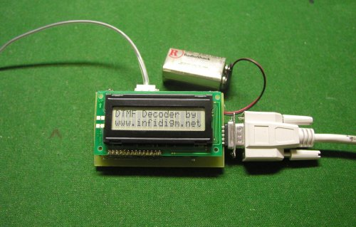

A weblog focused on interesting circuits, ideas, schematics and other information about microelectronics and microcontrollers.
E-books
Disclaimer
Because I have not tested all electronic circuits mentioned on this pages, I cannot attest to their accuracy; therefore, I do not provide a warranty of any kind and cannot be held responsible in any manner.
DTMF Decoder
10. July 2008 - 18:05 — adminDecoding DTMF (Dual Tone Multi frequency) with MT8870 chip and AVR x2313 microcontroller.

I2C EEPROM programmer
10. July 2008 - 14:40 — adminThis EEPROM programmer reads, writes and erases I²C 24C EEPROM devices through a PC serial port (RS-232) interface.
USocket - USB controlled Socket with PIC18F4550
10. July 2008 - 11:07 — adminThe idea of this project is to control (switch off/on) two power sockets with a computer by using its USB port.
ATTiny Board
9. July 2008 - 18:31 — adminWith this small board you can program most of the AVR ATTiny microcontrollers or you can build your projects to use it in a stand alone application. It can be powered with a 9V battery because it has 5V voltage regulator on it.
USB Bit Whacker
8. July 2008 - 16:45 — adminAn inexpensive, simple input/output device to connect your computer to the real world by Brian Schmalz.
AVR-MIDI - an USB MIDI-class compliant device
5. July 2008 - 20:04 — adminThis is an inexpensive DIY MIDI controller device for USB. It consists of a simple AVR ATMega16 with driver software from Objective Development (see).
Electronics sthetoscope
5. July 2008 - 20:00 — adminThis project is an attempt to build a portable electronic stethoscope that selectively
amplifies body sound signals for clear auscultation by applying various digital filters
using Microchip dsPIC capabilities along with Microchip’s low noise op-amps and PGA.
LPC2138 as a VGA controller
5. July 2008 - 19:54 — adminAn LPC2138 microcontroller generates the VGA signals that drive the monitor as well as the graphics and fonts. The microcontroller also handles a keyboard, a mouse and some storage memory.
Direct connecting: AVR to USB, no HW converters
5. July 2008 - 12:08 — adminSome techniques to connect AVR-based device to USB without a specialized HW, just only in the SW way.